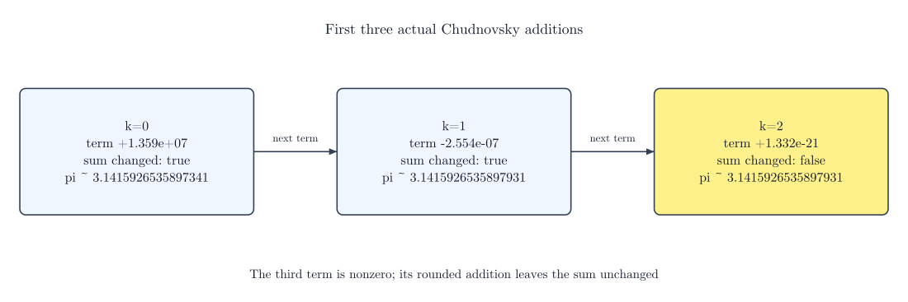
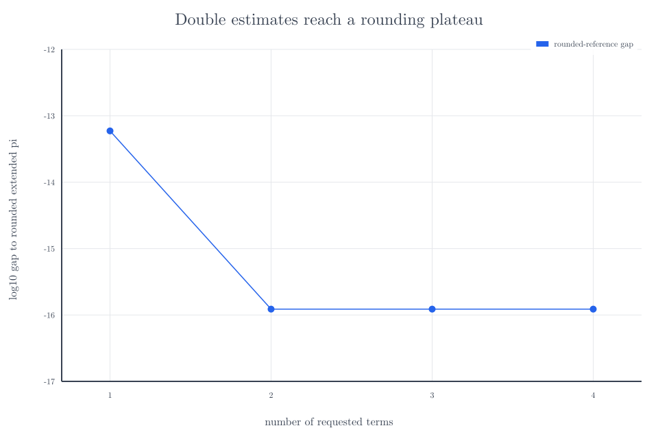
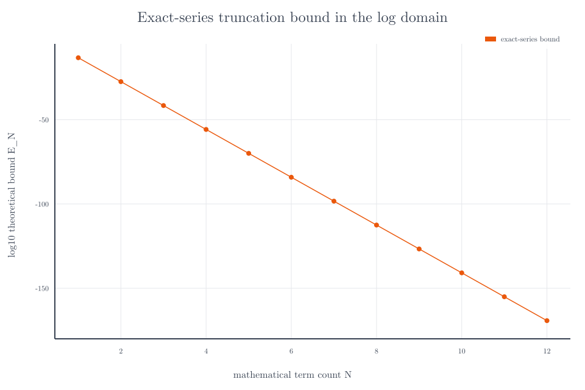

Chudnovsky Pi: Fast Exact-Series Convergence and a Floating Plateau
Abstract
Computing more digits of pi requires both a rapidly converging formula and arithmetic precise enough to retain its corrections. The Chudnovsky series has an asymptotic gain of about 14.18 decimal digits per term, but a double result cannot keep gaining digits at that rate. We inspect three actual native additions, retain the original one-to-four-term experiment with properly labelled reference gaps, derive an exact-arithmetic truncation bound, and follow the floating recurrence through stagnation and term underflow. A stable canonical recurrence replaces factorial evaluation that could overflow before cancellation.
Three terms: a nonzero correction that the sum cannot retain
Write A=13591409, B=545140134 and C=640320. With
the first term is A and the second is approximately −2.553837355·10⁻⁷. That second correction changes the rounded sum. The third term is nonzero, but is too small to change the double accumulator. The following table and diagram use records captured during one native evaluation. An unchanged floating sum is an arithmetic observation, not exact equality to the infinite series or a guarantee of correctly rounded pi.
#include <dm/dm.hpp>
int main() {
std::filesystem::create_directories("build");
const auto t=dm::algorithms::chudnovsky_pi_trace(3);
if(t.steps.size()!=3 || t.first_unchanged_index!=2 || t.steps[2].term==0)return 1;
std::print("| k | actual term | sum before | sum after | sum changed | rounded pi estimate |\n| ---: | ---: | ---: | ---: | :--- | ---: |\n");
dm::graphics::Diagram diagram(60,1100);
dm::graphics::DiagramNodeStyle node;node.width=5.9;node.height=3.2;node.font_size=20;
for(const auto& s:t.steps) {
std::print("| {} | {:.17e} | {:.17e} | {:.17e} | {} | {:.17g} |\n",s.index,s.term,s.sum_before,s.sum_after,s.sum_changed,s.estimate);
if(!s.sum_changed)node.fill={254,240,138};
const auto id=std::format("term{}",s.index);
diagram.node(id,{8.0*s.index,0},std::format("k={}\nterm {:+.3e}\nsum changed: {}\npi ~ {:.17g}",s.index,s.term,s.sum_changed,s.estimate),node);
if(s.index)diagram.edge(std::format("term{}",s.index-1),id,"next term");
}
diagram.text({8,3.1},"First three actual Chudnovsky additions",22)
.text({8,-3.1},"The third term is nonzero; its rounded addition leaves the sum unchanged",19)
.save_svg("build/chudnovsky_method.svg");
std::print("\nRequested {}, evaluated {}, ratio evaluations {}, sum additions {}.\n",t.terms_requested,t.terms_evaluated,t.ratio_evaluations,t.sum_additions);
}| k | actual term | sum before | sum after | sum changed | rounded pi estimate |
|---|---|---|---|---|---|
| 0 | 1.35914090000000000e+07 | 0.00000000000000000e+00 | 1.35914090000000000e+07 | true | 3.1415926535897341 |
| 1 | -2.55383735543025302e-07 | 1.35914090000000000e+07 | 1.35914089999997448e+07 | true | 3.1415926535897931 |
| 2 | 1.33183575309251178e-21 | 1.35914089999997448e+07 | 1.35914089999997448e+07 | false | 3.1415926535897931 |
Requested 3, evaluated 3, ratio evaluations 2, sum additions 3.

Deriving a recurrence that avoids factorial overflow
The familiar reciprocal form is
Taking C^(3/2)/12 outside the sum gives K above, since C=64·10005. Forming every factorial and power separately is unnecessary and can overflow even when the final term is tiny. Cancelling consecutive factorial factors gives
The native kernel starts at a₀=A, multiplies by this ratio, adds each term and returns K/S. It evaluates the three polynomial factors as bounded fractions, using n=k+1: (6−5/n)(2−1/n)(6−1/n). Converting the index before arithmetic also avoids overflowing expressions such as 6k at large int indices. The scalar and traced interfaces share this executing kernel; the trace does not reconstruct a second explanatory computation.
The old routine's call signature remains. Its factorial/power path is replaced, so the last output bits can change. Nonpositive term counts now throw std::invalid_argument instead of dividing an empty sum by zero. No arbitrary precision or binary splitting is performed by this evaluator.
The original four-term experiment, with honest reference gaps
The original report compared a double estimate with a double pi literal and called their difference the error to pi. That measures agreement between two rounded numbers. A zero difference is not proof of zero real error. We retain all four requested term counts and print both that original comparison and a gap to std::numbers::pi_v<long double>, explicitly identifying both as rounded references. The latter has more significand bits on this machine; on a platform where long double has no extra precision, it may offer no finer comparison.
No artificial 10⁻¹⁷ floor is inserted into the plot. A zero reference gap is reported as equality to that reference and omitted from logarithmic points. The plot therefore shows measured floating differences, not fourteen new correct digits per step.
#include <dm/dm.hpp>
int main() {
std::filesystem::create_directories("build");
constexpr double original_reference=3.14159265358979323846;
constexpr auto extended_reference=std::numbers::pi_v<long double>;
const auto t=dm::algorithms::chudnovsky_pi_trace(4);
std::vector<double> count,log_gap;int equal_reference=0;
std::print("Double significand bits: {}. Long-double reference significand bits: {}.\n\n",std::numeric_limits<double>::digits,std::numeric_limits<long double>::digits);
std::print("| terms | estimate | gap to original double literal | gap to rounded extended pi |\n| ---: | ---: | ---: | ---: |\n");
for(const auto& s:t.steps) {
const auto double_gap=std::fabs(s.estimate-original_reference);
const auto extended_gap=std::fabs(static_cast<long double>(s.estimate)-extended_reference);
if(extended_gap>0){count.push_back(s.index+1);log_gap.push_back(static_cast<double>(std::log10(extended_gap)));}else ++equal_reference;
std::print("| {} | {:.17g} | {:.9e} | {:.9e} |\n",s.index+1,s.estimate,double_gap,extended_gap);
}
auto plot=dm::graphics::RPlot::create();
plot.line(count,log_gap,"reference gap",{37,99,235},1.5).points(count,log_gap,"reference gap",{37,99,235},5)
.legend({"rounded-reference gap"},{{37,99,235}})
.title("Double estimates reach a rounding plateau")
.x_label("number of requested terms").y_label("log10 gap to rounded extended pi")
.x_limits(0.7,4.3).y_limits(-17,-12).save_svg("build/chudnovsky_pi.svg");
std::print("\nZero extended-reference gaps omitted from logarithmic points: {}.\n",equal_reference);
}Double significand bits: 53. Long-double reference significand bits: 64.
| terms | estimate | gap to original double literal | gap to rounded extended pi |
|---|---|---|---|
| 1 | 3.1415926535897341 | 5.906386491e-14 | 5.918637976e-14 |
| 2 | 3.1415926535897931 | 0.000000000e+00 | 1.225148455e-16 |
| 3 | 3.1415926535897931 | 0.000000000e+00 | 1.225148455e-16 |
| 4 | 3.1415926535897931 | 0.000000000e+00 | 1.225148455e-16 |
Zero extended-reference gaps omitted from logarithmic points: 0.

Even the first correction cannot display its full asymptotic gain here: the one-term approximation is already close to pi, leaving only a few further observable digits before double precision saturates. The exact series and the floating implementation answer different accuracy questions.
Why the asymptotic gain is about 14.18 digits
The factorial ratio contributes a factor that the old explanation omitted. Taking the limit in the recurrence gives
Thus −log10(ρ)≈14.1816474627. The factor is not merely 1/C³, which would predict an incorrect rate. The convergence is geometric in term count, often called linear convergence, with a very small ratio. It is not an assertion that each finite-precision call gains exactly fourteen correct digits.
For k≥1 the ratio magnitude is at most ρ. One direct check multiplies through by positive denominators. Writing x=k−1, the required difference is
The initial ratio is larger than ρ but still much less than one. All terms alternate and decrease in magnitude. Set b₁=a₁=120(A+B)/C³ and L=A−b₁>0. Every exact partial sum S_N and the infinite sum S are at least L. The alternating-series remainder and the ratio bound give, for N≥1,
The native log-bound helper evaluates log10(E_N) directly. It is a rounded evaluation of this mathematical bound, not an outward-rounded interval and not a bound on normaliser, recurrence, addition or division rounding. Its line can continue far below floating error without implying that the returned double has gained those digits.
#include <dm/dm.hpp>
int main() {
std::filesystem::create_directories("build");
std::vector<double> count,log_bound;
std::print("| mathematical terms N | log10 theoretical truncation bound |\n| ---: | ---: |\n");
for(int n=1;n<=12;++n) {
const auto bound=dm::algorithms::chudnovsky_log10_truncation_bound(n);
count.push_back(n);log_bound.push_back(bound);std::print("| {} | {:.9f} |\n",n,bound);
}
auto plot=dm::graphics::RPlot::create();
plot.line(count,log_bound,"theory",{234,88,12},1.5).points(count,log_bound,"theory",{234,88,12},4)
.legend({"exact-series bound"},{{234,88,12}})
.title("Exact-series truncation bound in the log domain")
.x_label("mathematical term count N").y_label("log10 theoretical bound E_N")
.y_limits(-180,-5).save_svg("build/chudnovsky_truncation.svg");
std::print("\nAsymptotic theoretical decimal gain: {:.12f}.\n",dm::algorithms::chudnovsky_digits_per_term());
const auto deep=dm::algorithms::chudnovsky_log10_truncation_bound(100);
std::print("100-term log bound remains finite: {}; converting its magnitude to double underflows: {}.\n",std::isfinite(deep),std::pow(10.0,deep)==0);
}| mathematical terms N | log10 theoretical truncation bound |
|---|---|
| 1 | -13.228921374 |
| 2 | -27.410568837 |
| 3 | -41.592216299 |
| 4 | -55.773863762 |
| 5 | -69.955511225 |
| 6 | -84.137158687 |
| 7 | -98.318806150 |
| 8 | -112.500453613 |
| 9 | -126.682101076 |
| 10 | -140.863748538 |
| 11 | -155.045396001 |
| 12 | -169.227043464 |
Asymptotic theoretical decimal gain: 14.181647462725. 100-term log bound remains finite: true; converting its magnitude to double underflows: true.

Actual term underflow and very large requests
The scalar evaluator retains constant numeric state; the traced evaluator owns one record per actual term. Stagnation does not end either computation. They continue through the first term that underflows to signed zero, include its addition, and then skip the requested suffix. Multiplying zero by subsequent finite recurrence factors would keep producing zero. A huge requested count therefore creates no huge trace reservation on the ordinary binary64 platform. This stopping reason is a floating range observation, not a real-error test.
#include <dm/dm.hpp>
int main() {
std::print("| current k | next/current signed ratio | -log10 ratio magnitude |\n| ---: | ---: | ---: |\n");
for(const auto k:{0,1,2,10,100,10000,std::numeric_limits<int>::max()}) {
const auto r=dm::algorithms::chudnovsky_term_ratio(k);
std::print("| {} | {:.12e} | {:.9f} |\n",k,r,-std::log10(std::fabs(r)));
}
const auto t=dm::algorithms::chudnovsky_pi_trace(std::numeric_limits<int>::max());
if(t.stop!=dm::algorithms::ChudnovskyStop::TermUnderflow || t.steps.back().term!=0)return 1;
std::print("\nRequested {}, actually evaluated {}, ratio evaluations {}, additions {}, first unchanged index {}.\n",
t.terms_requested,t.terms_evaluated,t.ratio_evaluations,t.sum_additions,t.first_unchanged_index);
std::print("\n| last actual k | term | sum changed |\n| ---: | ---: | :--- |\n");
for(std::size_t i=t.steps.size()-3;i<t.steps.size();++i) {
const auto& s=t.steps[i];std::print("| {} | {:.12e} | {} |\n",s.index,s.term,s.sum_changed);
}
std::print("\nFinal estimate {:.17g}; scalar and trace agree exactly: {}.\n",t.value,t.value==dm::algorithms::chudnovsky_pi(std::numeric_limits<int>::max()));
}| current k | next/current signed ratio | -log10 ratio magnitude |
|---|---|---|
| 0 | -1.879008537989e-14 | 13.726071247 |
| 1 | -5.215037481775e-15 | 14.282742566 |
| 2 | -5.588866432114e-15 | 14.252676269 |
| 10 | -6.289251412581e-15 | 14.201401044 |
| 100 | -6.549409200503e-15 | 14.183797874 |
| 10000 | -6.581590003602e-15 | 14.181669175 |
| 2147483647 | -6.581919057617e-15 | 14.181647463 |
Requested 2147483647, actually evaluated 25, ratio evaluations 24, additions 25, first unchanged index 2.
| last actual k | term | sum changed |
|---|---|---|
| 22 | 1.041311654294e-305 | false |
| 23 | -6.706447076649e-320 | false |
| 24 | 0.000000000000e+00 | false |
Final estimate 3.1415926535897931; scalar and trace agree exactly: true.
The recurrence uses O(m) floating operations for m actual additions through underflow. The ordinary call uses O(1) auxiliary storage; the trace uses O(m) owned storage and performs prefix divisions for display. This is not the bit complexity of a multiple-precision implementation. Binary splitting and large integer multiplication are useful for high-precision work, but are not hidden behind this double API. Bellard's 2010 implementation paper describes that separate high-precision workflow.
Validation and independent evidence
The following boundary checks exercise public input contracts and reproduce the scalar/trace agreement for a count that previously overflowed factorials. Calls have no shared mutable state; copied records remain independent.
#include <dm/dm.hpp>
int main() {
int rejected=0;
for(const auto n:{0,-1,std::numeric_limits<int>::min()}) {
try{(void)dm::algorithms::chudnovsky_pi(n);}catch(const std::invalid_argument&){++rejected;}
try{(void)dm::algorithms::chudnovsky_pi_trace(n);}catch(const std::invalid_argument&){++rejected;}
try{(void)dm::algorithms::chudnovsky_log10_truncation_bound(n);}catch(const std::invalid_argument&){++rejected;}
}
bool negative_ratio=false;try{(void)dm::algorithms::chudnovsky_term_ratio(-1);}catch(const std::invalid_argument&){negative_ratio=true;}
const auto t=dm::algorithms::chudnovsky_pi_trace(29);auto copy=t;copy.steps[0].term=0;
if(rejected!=9 || !negative_ratio || !std::isfinite(t.value) || t.steps[0].term!=13591409)return 1;
std::print("Nonpositive count rejections: {} of 9. Negative ratio index rejected: {}.\n",rejected,negative_ratio);
std::print("29-term request now finite: {}; actual additions {}, scalar/trace agreement {}.\n",std::isfinite(t.value),t.sum_additions,t.value==dm::algorithms::chudnovsky_pi(29));
std::print("Copied record mutation leaves original first term {}.\n",t.steps[0].term);
const auto log_bound=dm::algorithms::chudnovsky_log10_truncation_bound(std::numeric_limits<int>::max());
std::print("INT_MAX mathematical log bound remains finite: {}; it is not an error certificate for the double result.\n",std::isfinite(log_bound));
}Nonpositive count rejections: 9 of 9. Negative ratio index rejected: true. 29-term request now finite: true; actual additions 25, scalar/trace agreement true. Copied record mutation leaves original first term 13591409. INT_MAX mathematical log bound remains finite: true; it is not an error certificate for the double result.
Ten native tests compare the first twelve coefficients with independent long-double factorial expressions, verify 1,000 full-range random ratio indices and the positive polynomial identity, and check geometric bounds against one hundred first-omitted terms. Counts 1–4096, exact underflow boundaries, INT_MAX requests, signs, invalid counts and record ownership pass. All ten cases also pass AddressSanitizer and UBSan; existing pi, hexadecimal-digit and CORDIC regressions remain in the native runner.
A separate development oracle uses Python's standard Decimal arithmetic at 240 decimal digits. It computes pi from Machin's arctangent identity, rather than this series, checks the native term/prefix values through underflow and seven ratios, and compares twelve finite Chudnovsky truncations with the geometric bound. Values below that oracle's own decimal resolution are marked as such. This is validation evidence; report computation stays in native C++. There is no natural observational dataset for these numerical identities.
What the calculation establishes
The factorial cancellation gives a stable recurrence and the correct limiting ratio, including its factor 1728. Exact-series truncation improves rapidly, while the double accumulator reaches a plateau and eventually loses the terms themselves to underflow. Actual native records and separately labelled mathematical bounds make those three facts visible without inventing precision.
References
- D. V. Chudnovsky and G. V. Chudnovsky (1989), The computation of classical constants, Proceedings of the National Academy of Sciences 86(21), 8178–8182. https://doi.org/10.1073/pnas.86.21.8178
- Fabrice Bellard (2010), Computation of 2700 billion decimal digits of Pi using a Desktop Computer, fourth revision, section 2. https://bellard.org/pi/pi2700e9/pipcrecord.pdf The present evaluator uses the cancelled term recurrence in double precision; the geometric truncation bound is derived above.